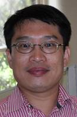
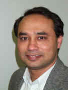

Confirmed Keynotes and Invited Talks
Keynotes:
Professor Lei Wang
Professor, Deputy Director of the Institute of Biomedical and Health Engineering, Shenzhen Institutes of Advanced Technology, China
Biography:
Lei Wang received the B.Eng in Information and Control Engineering and Ph.D in Biomedical Engineering, in 1995 and 2000, respectively. He was with University of Glasgow and Imperial College London, during 2001-2008. He is now with the Shenzhen Institutes of Advanced Technology, Chinese Academy of Sciences, as a Professor and the Deputy Director with the Institute of Biomedical and Health Engineering. Dr. Wang’s research interests focus on Body Sensor Networks. He has published more than 200 scientific papers, authored nine books/book chapters, and filed 60 patents.
Title: Proprietary IC-based electrocardiogram devices and systems for the National Low-cost healthcare project
Abstract:
The increasing aged populations worldwide generate a significant challenge to the healthcare providers. Thanks to the latest technologies in bioelectronics, which enable ubiquitous monitoring of the patients’ electrocardiogram (ECG) under their natural physiological states so that transient but life threatening abnormalities could be detected or even predicted. However, most of these ECG data acquisition devices employ off-the-shelf components, which inhibit further performance improvements in terms of power consumption, miniaturization and system reliability. In this talk, Application Specific Integrated Circuit (ASIC) design methodology and affiliated turn-key solutions for multiple lead ECG data acquisition are demonstrated. I will illustrate why Low frequency Low noise Low power (3Ls) are critical for this type of medical devices and how the 3Ls could be achieved by means of circuit-level and system-level innovations.
Invited talks:
Associate Professor Jinyan Li

Associate Professor, Faculty of Engineering and IT, University of Technology Sydney, Australia
Biography:
Associate Professor Li specialises in bioinformatics, computational biology, data mining, graph theory, information theory, machine learning and theoretical biology. He has published 70 journal articles and 65 conference papers of which many are highly cited.
He is known for his theoretical research work on emerging patterns that has produced numerous follow-up research interests in data mining, machine learning, and bioinformatics.
Title: Bioinformatics for Human Health
Abstract:
In this talk, I will briefly present biomarker discovery and prediction techniques for disease diagnosis such as childhood leukemia, lung cancer and HCV. I also present 3-dimensional binding site prediction methods which I have applied for the conformational B-cell epitope prediction for antigens related to influenza. The data sets involved are all high-dimensional and complicated. I will conclude that advanced data mining algorithms are useful for systematic and efficient studies of contemporary biomedical problems.
Professor Rezaul Begg

Professor Rezaul Begg, College of Sport and Exercise Science, Victoria University, Melbourne Australia
Biography:
Professor Begg's main fields of research include; biomechanics, biomedical engineering and machine learning. He has published 50 journal articles, 1 research book, 4 edited books, 15 book chapters, 85 refereed full conference papers, 27 conference abstracts and 3 reports.
His work focuses on developing new technologies and techniques with applications to human gait pathologies.
He is a senior member of the IEEE professional society, IEEE Engineering in Medicine and Biology Society (EMBS), and IEEE Computational Intelligence Society (CIS).
Title: Computational Intelligence Techniques in Gait Data Modelling
Abstract:
Analysis of the walking gait underpins research in many medical and applied health science domains, such as clinical gait analysis, sport performance, ageing, and rehabilitation. The common goals are evaluating locomotor function to detect abnormalities, determining effects due to ageing, disease, or trauma and evaluating systematically the individual’s walking pattern. Traditional statistical techniques have provided only limited success in describing the complex relationship between various measures and the overall gait functional state. On the other hand, greater successes have been reported using non-linear modelling of human gait such as the artificial neural networks, support vector machines and fuzzy clustering. This talk will focus on some of the recent research undertaken in the area of computational intelligence techniques applied to diagnosis and assessment of gait function.
Professor Lizhu Zhou
Professor, Department of Computer Science and Technology, Tsinghua University, China
Biography:
Prof Lizhu ZHOU is a full professor from Department of Computer Science and Technology, Tsinghua University of China, and the president of Database Technique Committee of China Computer Federation. His major research areas include database systems, digital resources management, Web data processing, and data mining etc.
Title: Build a Cloud Infrastructure to Support Home-Based Care Systems for Elderly People
-- Challenges and Solutions
Abstract:
The aging of population is a worldwide trend. It is a big issue that governments and human societies have to heal with. As China has the largest population in the world, this issue is more challenging than any other countries. To build a cloud Infrastructure to support home-based care systems for elderly people is a feasible and economical way for solving it. There are many existing works toward this direction. It is expected home-based care systems for elderly people will form a huge market and thus create a big industry. However, from many perspectives, we can see a big gap between this expectation and reality. In this talk, I'll identify some of the problems in this regard and explore their possible solutions.
Professor Michael Steyn

Professor, UQ Centre for Clinical Research, University of Queensland, Australia
Biography:
Michael trained as a General Practitioner in Scotland and then moved into Anaesthesia, along the way completing a Masters in Public Health. As a Consultant he specialised in Anaesthesia for Burns and Plastic / Reconstructive Surgery at the St Andrews Unit, Chelmsford England. He started at the RBWH August 2003, becoming Director in March 2005.
Title: Evidence Based Medicine: a confusion of numbers – supporting the effective utilisation of information.
Abstract:
“Trust me I am a Doctor” – patients hold doctors in great regard but modern medicine, although striving to make a difference, has failed to realise the expected / anticipated gains. Doctors claim to utilise and promote evidence based practice in an information rich environment yet we still hurt between 10 to 15% of our patients, fail to deliver the agreed level of care in up to 50% and take 17 years to adopt level 1 and 2 evidenced practice.
This talk will look at the challenge of modern medicine: the provision of health care to patients with the objective of achieving health for the purpose of living. Utilising examples from the operating theatre and clinical environment, key challenges that face the health information community will be explored – how do we promote health information management so as to maximise health service delivery.
The target is how do we support and achieve the full benefits from our data and information when delivered in a complex adaptive system that has utilised population data to inform us in our quest for quality care for individuals in the future, when we know that past performance is not necessarily a predictor of future performance and everyone is different.
Professor Xiaochun Yang

Professor, College of Information Science and Engineering, Northeastern University, China.
Biography:
Xiaochun Yang is a full professor in the College of Information Science and Engineering at Northeastern University, China. She is now a member of the Database professional committee and Collaborative Computing professional committee of CCF (China computer society). She got her Ph.D. degree at Northeastern University in 2001 and was a postdoctoral research at Brigham Young University from 2001 to 2003. She was a visiting scholar at UC Irvine on the falls of 2003, 2006, and 2007. She also visited the Chinese University of Hong Kong in 2006 and the Hong Kong University of Science and Technology in 2012 as a visiting professor. Her research interests include database systems, data quality management, privacy preserving data publishing, and big data.
Dr. Yang has published more than 100 papers in refereed journals and conferences, including SIGMOD, VLDB, ICDE, TKDE, etc. She holds one US patent and one Chinese patent. Dr. Yang is a member of the ACM, the IEEE, and CCF. She was the guest editor of Multimedia Tools and Application (2011-2014) and editor of Journal of Frontiers of Computer Science and Technology from 2011. Dr. Yang received Outstanding Young Scholars award from National Natural Science Foundation of China in 2013, and an award from Fok Ying-Tong education foundation in 2006. She was chosen as the new century excellent researcher from the ministry of education in China in 2006, . She also received the natural science prize (second level) from the ministry of education in China in 2007 and Progress prize in science and technology in Liaoning province (third level) in 2002 with her colleagues.
Title: Big Biological data -- Challenges & Opportunities
Abstract:
Recent advances in next-generation sequencing technologies have made DNA sequencing orders of magnitude faster and cheaper than ever before. Massive amounts of sequence data are being generated daily. The ushering of personal genomics era brings significant computational challenges on how to handle the large scale genomic data in a daily life. In this talk, I first review challenges and opportunities in the area of biological data management, and then I’ll briefly introduce our ongoing project, a biological data management platform.
Doctor Stanley Chiang
Doctor, General Practitioner, MBBS;BSc.(Hon);Dip.Med.Acup.(PANCH);FAMAC;FRAC
Biography:
Dr. Chiang was born in Shanghai, China. In 1980 he came to Australia to do his university studying, and obtained degrees in biological sciences (B.Sc., Hon.) and medicine (M.B.B.S.) at Flinders University of S.A. In 1992 he came to Melbourne and started general practice. Later he obtained further post-graduate qualifications including FRACGP and FAMAC. Currently he runs two medical clinics with a business partner. From 2011 the two clinics obtained AGPAL Accreditation until now.
Since 2011 Dr Chiang has been invited to China many times to deliver speeches and give seminars re. General Practice as a speciality in Australia, as well as medical IT in Australian GP practice. He also participated in HIS several times and gave a speech before.
Dr Chiang is currently the mentor of Australian Medical Acupuncture College for medical acupuncture trainees. He has also been engaged in teaching medical students.
Title: First-hand Experience of IT use in the Australian General Practice - an update
Abstract:
Further to my talk in the previous HIS (E-health in Australia) an account of first-hand experience of IT use in the Australian general practice will be given (with the latest update). The advantage and limitations of E-health will be discussed.